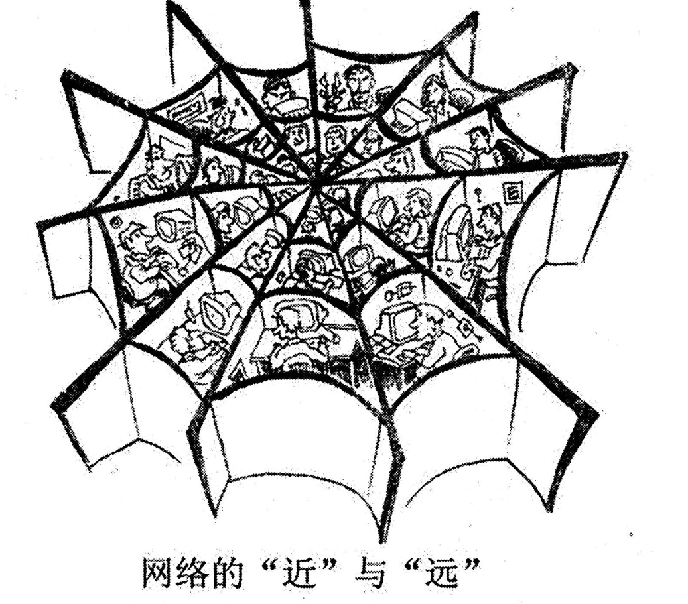

A小作文 · 致报社编辑的信（10 分）
Restrictions on the use of plastic bags have not been so successful in some regions. “White Pollution” is still going on.
Write a letter to the editor(s) of your local newspaper to
1) give your opinions briefly, and
2) make two or three suggestions.
You should write about 100 words on ANSWER SHEET 2.
Do not sign your own name at the end of the letter. Use “Li Ming” instead.
Do not write the address. (10 points)
💭 审题三件事
- 先把「看法」和「建议」切开，切不开就一定会写重。本题最常见的失分不是没话说，而是同一件事说了两遍：第一段说「应该加强管理」，第二段建议「加强管理」。切法很简单——看法回答「问题出在哪」，建议回答「谁该做什么」。本题的看法只要一句机制话就够：限塑令改的是价格，没改掉习惯；几分钱一个的袋子，人照买不误。
- 三条建议按「主体」分，不按「程度」分。分主体天然不重复：报纸能做什么 / 商家能做什么 / 制度能做什么。⭐ 尤其别忘了第一条——这封信是写给编辑的，就该有一条是编辑自己办得了的事（开个专栏、做一次追踪报道）。给收信人一件他办得了的事，是这一体裁最容易被忽视的加分点。
- 语气以题干为标尺。题干写的是 have not been so successful（不够成功），不是彻底失败。上来写 “The ban has completely failed” 或 “Our government does nothing” 就越过了题干给的刻度——致编辑信是参与公共讨论，不是投诉信，更不是骂街。先承认成绩（Although shops no longer give bags away…），再指出问题，这一让步句就把语气钉住了。
⚠️ Directions 限定词清算表（本页新增 · 开考先圈出来）
小作文 10 分，丢分很少丢在语言上，多半丢在没看见 Directions 里的限定词。本题一口气给了五个，密度是历年少见的。养成习惯：读完 Directions 先把限定词一个个圈出来，再动笔。
| 限定词 | 它约束什么 | 违反的后果 |
|---|---|---|
| briefly（opinions） | 看法只能占一两句，不能展开论证 | 看法写成一段议论 ⟹ 挤掉建议的字数，第二个要点被压成口号 |
| two or three（suggestions） | 数量被明文规定：写 2 条或 3 条，都行 | 写 1 条＝要点不全，直接掉档；写 4–5 条＝每条只剩半句，全是「应该加强……」 |
| about 100 words | 95–115 最稳 | 低于 80 按档扣；超过 130 挤占大作文时间（大作文 20 分才是大头） |
| Do not sign your own name | 署名一律 Li Ming | 签真名有判零风险（视同违规标记） |
| Do not write the address | 不写地址，也不必写日期 | 白扔格式分；还占掉 10 来个词 |
| the editor(s) of your local newspaper | 收信人＋范围：本地报纸的编辑 | 写成给市长/环保局的信＝体裁错；通篇谈全球变暖＝范围飘了 |
✍️ 范文（ 词 · 🟡 亮点点击看讲解）
Dear Editor,
目的I am writing to express my concern about the limited effect of the restrictions on plastic bags.
看法（briefly）Although shops no longer give bags away, “white pollution” is still to be seen in our streets and rivers. To my mind, the rules have changed prices rather than habits: a bag costing a few cents is taken without a second thought.
建议 ×3May I therefore make three suggestions? First, your newspaper could run a weekly column showing where discarded bags end up. Second, supermarkets should sell cheap cloth bags at every checkout. Finally, a small deposit could be charged on each bag and refunded when it is returned.
收尾I do hope these ideas will reach your readers.
Yours sincerely,
Li Ming
我写这封信，是想表达我对限制使用塑料袋收效有限的担忧。
虽然商店不再免费提供塑料袋，“白色污染”在我们的街道与河流中依然随处可见。在我看来，这些规定改变的是价格而非习惯：一个只值几分钱的袋子，人们拿起来根本不会多想。
因此，请允许我提三点建议。第一，贵报可以开设一个每周专栏，追踪这些被丢弃的袋子最终去了哪里。第二，超市应在每个收银台出售廉价布袋。第三，可以对每个塑料袋收取少量押金，归还时退回。
我真诚地希望这些想法能传达给贵报的读者。
此致
李明
- 要点只给一条建议，或把三条写成同一条的三个说法（「加强宣传 / 加强教育 / 提高意识」）。Directions 白纸黑字写了 two or three，阅卷就按条数看——三条要来自三个不同主体才叫三条。
- 要点看法与建议写重了：第一段说「监管不力」，第二段建议「加强监管」。本题最典型的内容失分。看法答「问题出在哪」，建议答「谁做什么」。
- ⭐ 体裁三条建议里没有一条是编辑能执行的。信是写给报社的，通篇只让政府和超市干活，收信人被晾在一边——这是本题区别于普通建议信的唯一动作，也是最容易被忽视的加分点。
- 语气写成投诉信或檄文：“The government has done nothing.” 题干只说 not been so successful（不够成功），你的措辞不能超过这个刻度。批评要落在机制上（改了价格没改习惯），不要落在人身上。
- 格式称呼写成 Dear Bob / Dear Sir（收信人可能是复数 editor(s)，且是陌生人）；签真名；写地址；补日期。四条都是白扔分。
- 语言plastic bag 的单复数（restrictions on the use of plastic bags）；suggestion 的搭配是 make a suggestion / put forward a suggestion，不是 give a suggestion；advice 不可数（a piece of advice）。
- 语言把 “white pollution” 当成英语里现成的说法直接裸用。它是中式概念：第一次出现加引号（题干自己就加了），若字数允许再补半句解释。
- 字数about 100 词：95–115 最稳。本文 词。
- 目的句用 express my concern about，不用 complain about。给报纸写信是参与公共讨论，不是投诉。一个动词就把体裁的调子定住了。
- 让步句一句话干两件事：Although shops no longer give bags away, … is still to be seen —— 前半承认成绩（呼应题干 not been so successful），后半点出问题。凡题干措辞留了余地，你的第一句就该把这个余地写出来，这是「审题准确」的直接证据。
- 看法的落点是「机制」而不是「态度」：the rules have changed prices rather than habits。这是全信最贵的一句——短、有对比、有解释力。briefly 不是让你少说，是让你说得准。
- 三条建议分三个主体、用三个不同的动词：run a column（报纸）/ sell cloth bags（超市）/ charge a deposit（制度）。主体一分开，内容就不可能重复；First / Second / Finally 三个路标只花三个词，却让阅卷人一眼数出三条。
- 押金制是「可执行」的样板：有动作（charged）、有额度（small）、有回路（refunded when returned）。方案的可执行性 ＝ 动作 + 条件 + 结果，三样齐了才算一条建议；“We should protect the environment” 三样全无。
- 收尾贴着体裁收：these ideas will reach your readers —— 报纸的价值就是「让话传到读者那里」。比通用的 Thank you for your attention 更像这封信该有的最后一句。
B大作文 · 图画作文（20 分）
Write an essay of 160–200 words based on the following drawing. In your essay, you should
1) describe the drawing briefly,
2) explain its intended meaning, and then
3) give your comments.
You should write neatly on ANSWER SHEET 2. (20 points)

- 一张巨大的蜘蛛网占满整幅画：粗黑的辐射丝从中心射出，同心弧一圈圈套住，织成大小不一的网眼。
- 靠近中心的每一个网眼里都坐着人——一到两个，画成头、肩、上半身，有的伏在桌前，个别格子里能看出方框状的桌面或屏幕。人挨着人，中间只隔着一根丝。
- 分隔用的丝画得极粗，在视觉上像一道道墙：格与格紧邻，却谁也看不见谁。
- 最外圈的网眼是空的（大片留白），网的最外缘还张开着若干锚线。越靠中心越挤，越往外越空。
- ⚠️ 画面上没有蜘蛛，也没有被缠住的猎物。这是本图最重要的一条读图事实——它直接否掉了最常见的那个跑题（见下）。
- 图注（画下方一行汉字）：「网络的“近”与“远”」。两个带引号的字是一对反义词，它就是本文的骨架。
💭 审题：题眼是图注里那一对引号
- 图注是「A 与 B」的对举结构 ⟹ 文章必须两边都写。这一点和 2008 那年很不一样：2008 的图注是因果句（「你一条腿，我一条腿；你我一起，走南闯北」），顺着推就行；本年图注是一对反义词，只写一边（只骂网络 / 只夸网络）立意就残了一半。而且第二段的核心任务不是分别描述「近」和「远」，是回答为什么同一个东西既近又远——把「同一根丝既连又隔」写出来，档次就上去了。
- 别把蜘蛛网读成陷阱。符号的常见联想（蛛网＝罗网＝陷阱）在这里不成立：画里没有蜘蛛，也没有被缠住的猎物，网眼里的人是居民不是猎物——他们是自己坐进去的。写成「网络是陷阱，要警惕沉迷」就滑进了另一道题。读图铁律：只写画上有的东西；画上没有的联想，再顺口也不许当论据。
- “远”必须讲机制，不能只喊冷漠。为什么连得越多反而越远？给一个能写下去的解释：注意力是定量的——联系人数量上升，分到每段关系的时间与注意就下降；而且网上交换的多是碎片（点赞、表情、转发的链接），不是共同经历。有了机制，第二段才叫「论述充分」，否则通篇只是「现在的人越来越冷漠了」的同义反复。
📐 描图段三看（换任何一年的图都能用 · 本图版）
| 看什么 | 在本图里 | 为什么它是采分点 |
|---|---|---|
| ① 看图上的字 | 图注必须译出，而且要保住那对引号的对照：the “near” and the “far” of the net。 | 命题人写上去的字＝主旨直译。图注是对举结构，译文若只剩一半，全文立意也只剩一半。 |
| ② 看最反常的地方 | 网眼里坐满了人（网眼本该是空的），越靠中心越挤、外圈却空着，而且整幅画里没有蜘蛛。 | 反常处就是寓意的入口：人是自愿住进网里的；越是「连得紧」的地方越拥挤，但每个人仍只占一格。没有蜘蛛 ⟹ 这不是关于陷阱的画，是关于距离的画。 |
| ③ 看动作方向 | 每个人的动作都止于自己的格子（伏在自己的桌前/屏幕前），粗丝把相邻的两个人隔开。 | 方向决定基调：本图是反讽（同处一网却互不相望），所以全文是警醒不是赞美。若画的是人们越过丝线互相递东西，立意就要翻成褒扬。 |
🧩 图注的语法结构，决定文章的论证结构（本页新增 · 四年横切）
| 年份 | 图上的字是什么结构 | 文章就得怎么搭 |
|---|---|---|
| 2007 | 无字，只有两个想象气泡（球门/门将各自被放大） | 靠对比两个气泡立意；描图段要把两个人各自「想什么」都说出来 |
| 2008 | 因果句：你一条腿，我一条腿；你我一起，走南闯北 | 顺着因果推：分开 ⟹ 寸步难行；合起来 ⟹ 无远弗届。单线论证 |
| 2009 本题 | 对举短语：网络的“近”与“远” | 两边都要写，还要回答「为什么同一个东西既近又远」。论证是双线并成一股，比 2008 难一层 |
| 2022 | 对话：两名学生就要不要听讲座的两句话 | 必须转述两句对话并选边站；不站队＝和稀泥，掉档 |
- 看见图上的字，先判它的语法结构，再决定段落怎么搭。无字 ⟹ 对比画面；因果句 ⟹ 顺推；对举短语 ⟹ 双写 + 解释统一性；对话 ⟹ 转述 + 站队。这一步只花 20 秒，却决定了第二段是不是踩在点上。
✍️ 范文（ 词 · 🟡 亮点点击看讲解）
①描图As is symbolically shown in the drawing, a huge spider’s web spreads over the whole picture. In almost every mesh sits a person, bent over something of his own, and the thick threads between them run like walls; the outer meshes are left empty. The caption reads: the “near” and the “far” of the net.
②寓意The web, of course, is the Internet. Never before have people been linked so closely: a message crosses the earth in a second, and a thousand “friends” are one click away — that is the “near”. Yet the very threads that tie us together also divide us into cells. What travels along them are fragments — a like, an emoji, a forwarded link — rather than a shared life; and that is the “far”.
③评论To my mind this paradox calls for attention rather than panic. There is no spider in the picture: no one is caught in the web — we have simply forgotten to step out of our own mesh. A network can carry our words, but it cannot spend our time for us. For my part, I keep one rule: whatever can be said at a table should not be typed on a screen.
这张网当然就是互联网。人类从未像今天这样紧密相连：一条消息一秒钟就能跨越地球，上千个“好友”不过一键之遥——这就是那个“近”。然而，把我们系在一起的那些丝线，同时也把我们分隔成一个个格子。沿着这些丝线流动的是碎片——一个赞、一个表情、一条转发的链接——而不是共同的生活；这就是那个“远”。
在我看来，这一悖论需要的是正视，而不是恐慌。画面上并没有蜘蛛：没有人是被网困住的——我们只是忘了走出自己的那个网眼。网络能替我们传话，却不能替我们花时间。就我而言，我给自己立了一条规矩：凡是能在一张桌子旁说出口的话，就别打在屏幕上。
🔁 一图三写：同一幅图，第三段的三个版本
本题给的是 comments 版。前两段一字不动，只换第三段，就能应付另外两种问法。三个版本都按 60–75 词写好，可直接背。
- 跑题写成「网络是陷阱」（沉迷、诈骗、隐私泄露）。图里没有蜘蛛、没有猎物，人是自己坐进网眼的。这是本图最诱人的一个坑——蛛网的符号联想太顺口了。
- 跑题只写一半：通篇骂网络（丢了“近”）或通篇夸地球村（丢了“远”）。图注是一对反义词，写一半＝只读了半个题眼。
- 跑题泛泛谈「现代人越来越冷漠」，从头到尾不提网络。载体一丢，就是一篇可以套到任何图上的万能作文，阅卷一眼看穿。
- 要点不译图注。与 2008 同理：图上有汉字而作文里一个字都不体现，描图段按要点不全扣。
- 要点第二段只说「网络让人疏远」，不解释为什么。评分标准要的是机制（注意力定量 / 交换的是碎片），不是感慨。
- 语言开头写 “With the development of science and technology, more and more people…”——与图无关的万能句是阅卷负面清单第一名，第一句就暴露背模板。
- 语言词形别写错：spider’s web / cobweb（不是 spider web 更稳）、mesh（网眼）、thread（丝线）。写不准就绕开：the drawing shows a huge net 也完全可以。
- 字数160–200：190–197 最稳。本文 词。
- 描图段用倒装装下最多的信息：In almost every mesh sits a person —— 地点状语提前引起的完全倒装，既是语言亮点，又让「网眼」这个关键意象站在句首。后面用 and 接一个并列句写「丝像墙 + 外圈空着」，一句话交代完画面。
- 第二段的骨架是「同一根丝」：the very threads that tie us together also divide us。very 在这里是「正是那些」，一个词就把「同一个东西既连又隔」说清楚了——这正是对举式图注要求你回答的那个问题。没有这一句，第二段就只是把“近”和“远”分别描述了一遍。
- Never before have people been linked so closely —— 否定副词置于句首引起的部分倒装，是议论文里性价比最高的一个句式（写一次就够，写两次显得刻意）。
- “There is no spider in the picture” 是全文最贵的一句。它同时干了两件事：证明你真的看了图（细到「有没有蜘蛛」），并当场否掉最常见的那个跑题。凡是自己容易跑题的地方，就在卷面上明写出来——等于告诉阅卷人「我知道那个坑」。
- 判断句要给出「网能干什么、不能干什么」的界限：carry our words / cannot spend our time。抽象的「网络是把双刃剑」人人会写，划出具体边界才是自己的看法。
- 末句回扣意象且可执行：whatever can be said at a table should not be typed on a screen。用「桌子」对「屏幕」，正好接住第一段的「网眼」与「墙」。图画作文的最后一句永远回到图里去找。
- 时态：描图与说理全篇一般现在时；只有 ③-B 举例版切到过去时。三段时态别混。
03🩺 跑题诊断表（这幅图最容易滑向的四个方向）
| 你可能写成 | 错在哪 | 大概什么档 |
|---|---|---|
| 蜘蛛网＝陷阱：网络是罗网，要警惕沉迷／诈骗 | 过度解读符号。画里没有蜘蛛、没有猎物，人是自己坐进网眼的居民。读图只能读画上有的东西。 | 立意偏，10 分上下 |
| 只写网络的危害（沉迷、信息过载、隐私） | 丢掉图注的“近”这一半。对举式图注写一半＝题眼只读了一半。 | 立意残，11–12 分 |
| 只写网络让世界变成地球村（纯赞美） | 丢掉“远”这一半，同上。而且与画面矛盾——画里每个人都被粗丝隔着。 | 立意残，11–12 分 |
| 现代人越来越冷漠（通篇不提网络） | 载体丢了，变成可以套在任何一幅图上的万能作文。 | 沾边，12 分上下 |
| 网络有利也有弊，我们要辩证看待 | 方向对，但停在口号：不回答「为什么同一个东西既近又远」，通篇是「有利有弊」的同义反复。 | 二档，13–14 分 |
| ✅ 同一根丝既连接又隔断：连接的数量上升、深度下降——因为注意力定量，且交换的是碎片而非共同生活 | 抓住图注的对举结构，并给出机制；末段给可执行的态度。 | 一档，17 分以上 |
04🌏 中式概念怎么译 ＋ 环保话题词块
本题的题干自己就把 “White Pollution” 加了引号——这是命题人示范的处理方式。中文里的概念直译成英文往往不是错，而是英语读者看不懂；考场上的稳妥做法是引号 ＋ 一句同位语解释，字数不够就只加引号。
| 中式概念 | 稳妥写法 | 坑 |
|---|---|---|
| 白色污染 | “white pollution” — the litter of discarded plastic | 裸用 white pollution 而不加引号／不解释；更别写成 white rubbish |
| 限塑令 | the ban on free plastic bags / the restrictions on plastic bags | plastic limit order（逐字硬译，英语里没有这个说法） |
| 光盘行动 | the “clear your plate” campaign | CD action（CD 是光盘的另一个义项，会闹笑话） |
| 共享单车 | shared bikes / bike-sharing services | share bicycle（词性与单复数都错） |
| 垃圾分类 | waste sorting / rubbish classification | garbage separate |
| 低碳生活 | a low-carbon lifestyle | low carbon life（少了连字符与冠词，读作「低碳的生命」） |
♻️ 环保话题词块（小作文的语料可直接迁移到环保类大作文）
05素材联动 · 2009 本年七篇几乎全能喂这篇作文
06📮 小作文十类信件分诊表（Part A 一表通吃 · 本年新增第 10 类）
Part A 只有 10 分，但它是全卷最容易拿满的 10 分——认对体裁、写对首尾句、避开那一条特有雷区就够了。读完 Directions 先在草稿纸上写三样：体裁 / 收信人 / 要点数（含限定词）。
| 体裁 | 第一句（目的句） | 收尾句 | 这一类特有的雷区 |
|---|---|---|---|
| 致编辑信 letter to the editor 2009 本题 | I am writing to express my concern about … | I do hope these ideas will reach your readers. | 写成投诉信／檄文；三条建议里没有一条是编辑能执行的；看法与建议写重 |
| 道歉信 apology 2008 | I am writing to apologize for + doing … | Please accept my sincere apologies. | 只道歉不给方案；方案空心；过度辩解／过度自责 |
| 建议信 suggestion 2007 | I am writing to put forward several suggestions concerning … | I would be grateful if these could be taken into consideration. | 写成投诉信；建议只有口号没有可执行动作 |
| 邀请信 invitation 2022 | On behalf of …, I am writing to invite you to … | We are looking forward to your favorable reply. | 漏时间/地点/事由；不说明「为什么请你」 |
| 感谢信 thanks | I am writing to express my heartfelt thanks for … | Please accept my sincere gratitude once again. | 空洞：不写清对方到底做了哪一件具体的事 |
| 投诉信 complaint | I am writing to complain about … | I would appreciate it if you could look into this matter. | 只发泄情绪、不提出明确诉求（退款/更换/道歉） |
| 咨询信 inquiry | I am writing to ask for information concerning … | I would appreciate an early reply. | 问题堆成一团——要 1) 2) 3) 编号问 |
| 申请信 application | I am writing to apply for the position of … | I would be glad to attend an interview at your convenience. | 只夸自己不对岗；不留联系方式 |
| 推荐信 recommendation | It is my pleasure to recommend … for … | I recommend him/her without reservation. | 通篇形容词、没有一件具体事例 |
| 通知/告示 notice | 标题居中 Notice ／ 正文直入事由 | 落款写单位（如 Students’ Union）+ 日期 | 按书信格式写（加 Dear… / Yours sincerely）；忘了落款单位 |
⚖️ 致编辑信 vs 建议信：像，但有三处不一样
| 致编辑信（2009） | 普通建议信（2007 给图书馆） | |
|---|---|---|
| 收信人 | 陌生的编辑，且可能是复数 editor(s) | 具体机构的负责人（校方、馆长） |
| 建议给谁 | 可以给社会各方（报纸、商家、制度），但至少要有一条是收信人能办的 | 建议原则上都要落在收信人能拍板的范围内 |
| 语域 | 公共讨论：可以有判断，不可以有火气；先承认成绩再指问题 | 服务性沟通：更客气，多用 would / could 婉转式 |
07可迁移框架（换题也能用）
致编辑信 / 公共议题信 四步骨架
图画作文骨架 · 对举型图注版（图上写着「A 与 B」时用）
08📊 四年大作文横向对照（已做的四年）
| 年份 | 图里画了什么 | 主题落点 | 第 3 条要求 | 本年特有的坑 |
|---|---|---|---|---|
| 2007 | 守门员与射手各自想象中的球门（两个气泡） | 自信心 / 心态 | support with an example | 看成「乐观 vs 悲观」（图里两人都在怕）；第三段不举例 |
| 2008 | 两个各失一腿的人搭肩前行，拐杖被撇在身后 | 合作 / 优势互补 | give your comments | 写成「关爱残疾人」或「身残志坚」；漏译图注 |
| 2009 本题 | 巨大的蜘蛛网，网眼里坐满了人，外圈空着 | 网络时代的「近」与「远」 | give your comments | 把蛛网读成陷阱（图里没有蜘蛛）；只写一半（只骂或只夸） |
| 2022 | 两名学生在讲座海报前争论要不要去听 | 学习观 / 跨界吸收 | give your comments | 不站队、和稀泥；漏引对话 |
- 凡是图上有字（对话、标语、图注），第一段就必须把字译进英文。四年里 2008、2009、2022 都有字，只有 2007 没有——有字的年份，漏译就是描图段直接失分。
- 图上那句字的语法结构，决定第二段的论证结构。因果句顺推（2008）／对举短语双写并解释统一性（2009）／对话必须转述并站队（2022）。这一步只花 20 秒，却决定第二段踩不踩得住点。
- 第三条 Directions 的动词决定第三段的形态：comment ⟹ 表态+建议；example ⟹ 必须举例。开考先读 Directions 三行，别凭上一年的手感写（与阅读新题型的元套路 R32 是同一个道理：先认变体，再动手）。